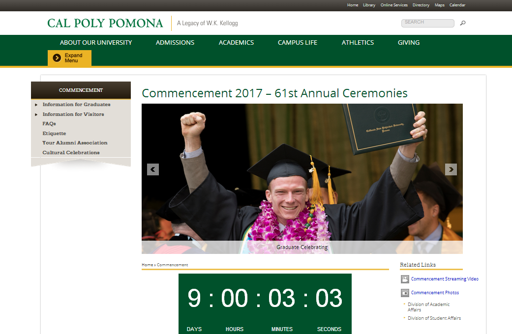
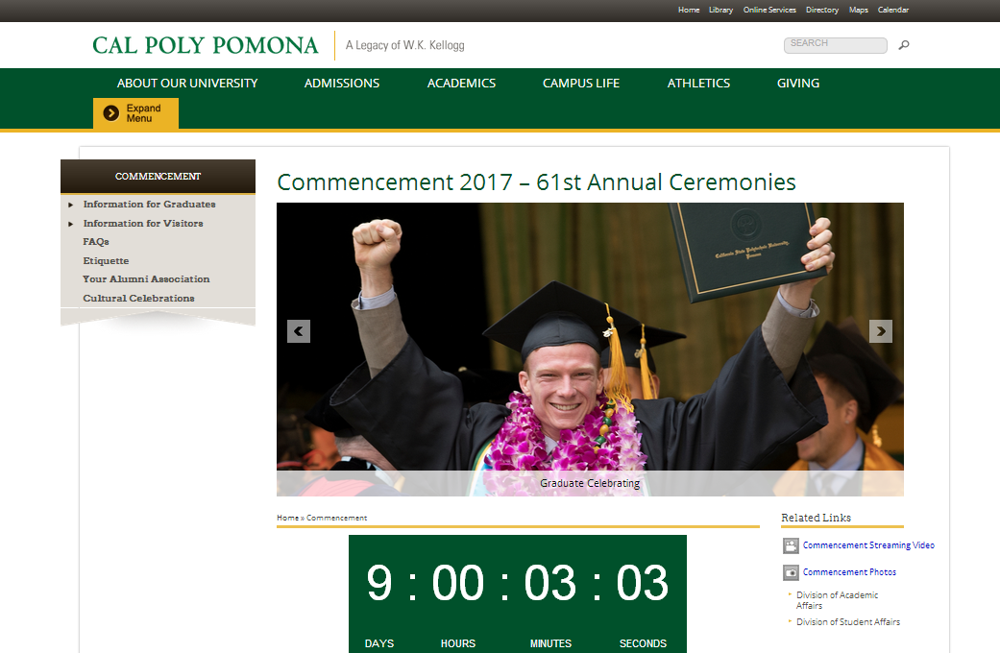

It looks like you have TOM 301 and BUS 496 left, Edward
We believe you will graduate at approximately Summer Quarter 2017
Some dates and information on the Registrar's website haven't been updated yet
 

| Quarter when graduation is expected | Graduation application period: | Apply for Graduation to receive Graduation Senior Registration Appointment by: | Deficiencies must be cleared by: |
|---|---|---|---|
| Fall 2016 | March 28 - October 21,2016 | May 12, 2016 Schedule Adjustment: August 18, 2016 | January 6, 2017 |
| Winter 2017 | September 22, 2016 - January 27, 2017 | October 21, 2016 | April 12, 2017 |
| Spring 2017 | January 3, 2017 - April 14, 2017 (apply for graduation by April 14 to have your name printed in the Commencement Program | January 27, 2017 | July 12, 2017 |
| Summer 2017 | March 27 - August 10, 2017 | April 14, 2017 | September 27, 2017 |
| Spring 2017 Online Graduation Application Period Your name will be printed in the Commencement Program if you apply by the deadline | Commencement Confirmation Spring Graduation Applicants will be notified on their eligibility to participate in Commencement via |
|---|---|
| January 3 - April 14, 2017 | May 2, 2017 |
| Spring 2017 Early Commencement Participation Application Period Your name will be printed in the Commencement Program if you apply by the deadline and are eligible | Early Commencement Confirmation Early Commencement Participation Applicants will be notified on eligibility to participate in Commencement via |
|---|---|
| February 1 - April 14, 2017 | May 2, 2017 |